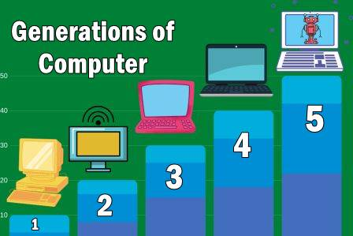

The fifth-generation languages are also called 5GL. It is based on the concept of artificial intelligence. It uses the concept that that rather than solving a problem algorithmically, an application can be built to solve it based on some constraints, i.e., we make computers learn to solve any problem. Parallel Processing & superconductors are used for this type of language to make real artificial intelligence.
Example: PROLOG, LISP, etc.